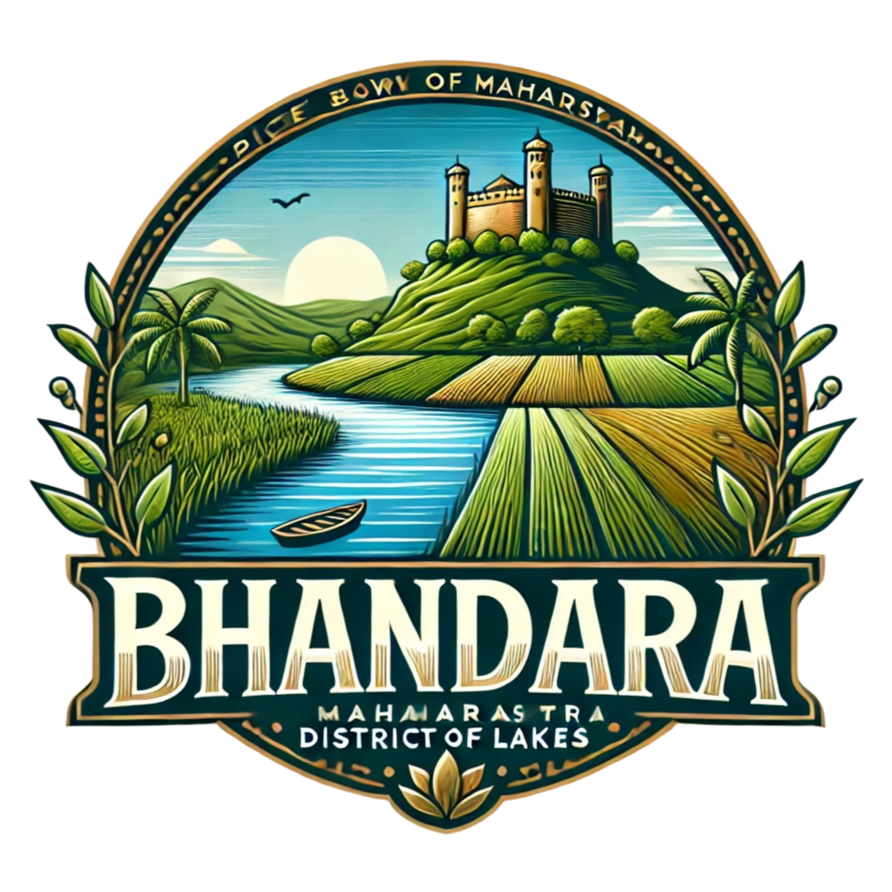

भंडारा
BHANDARA

Tourist Places
Maha Samadhi Bhumi
2500 years ago Buddha Dharma raised in India and after 1700 years it was extinct from India. The birth place…
Rawanwadi Dam
Official Designation of Rawanwadi Dam Irrigation Project is ” Rawanwadi Dam , D – 04708 ” . However local and…
Umred Karhandla Wildlife Sanctuary
Umred Karhandla Wildlife Sanctuary, about 58 km from Nagpur and 60 km from Bhandara spreed over Pauni Tahsil of
Bhandara…
Korambhi Temple
Korambhi is a village in the Bhandara tahsil of Bhandara District of Maharashtra state in India. There is a temple…
Gosekhurd Dam
Indirasagar Dam, also known as Gosikhurd Project, was established with an aim of offering irrigation facilities to
the villages of…
Koka Wildlife Sanctuary
Koka was approved as a wildlife sanctuary only a year ago in 2013.. The park is situated barely 20 km…